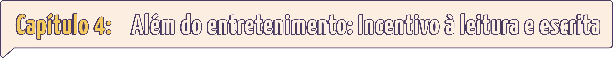

POR QUE OS HOMENS LEEM MENOS FANFICS?
Bate-papo com Matteus Manzo

Já pensou em como seria se o gênero fanfic fosse trabalhado dentro de sala de aula? Pois Talita Fernandes, de 24 anos, pensou. Formada em Letras pela Universidade Federal de Pernambuco, é escritora de fanfics e livros originais. Assim como diversas outras mulheres, a paixão pela literatura começou com as fanfics, por isso a jovem defende como essas histórias não são apenas um incentivo à leitura, mas também uma ferramenta para exercitar a criatividade e escrita.
Por ser um gênero que ganhou mais espaço e relevância com a chegada a internet, ainda há um estigma muito grande acerca dessas obras. Assim, muitos profissionais da educação nem sequer ouviram falar a respeito. Talita explica que, na hora de produzir o Trabalho de Conclusão de Curso intitulado “A Fanfiction como Ferramenta Para a Consolidação do Letramento Literário”, teve dificuldade para encontrar um professor orientador com conhecimento do tema, algo que, para ela, não deveria acontecer em uma faculdade de letras.
A jovem enxerga as fanfics como uma possibilidade de abrir as portas do universo literário para o público mais jovem, principalmente por conta de uma fácil compreensão da linguagem e por ser algo totalmente gratuito e de fácil acesso. Afinal, não é difícil encontrar adolescentes interessados em livros ou até mesmo que gostem de escrever. No entanto, não é tão simples assim encontrar aqueles que se interessam pelos métodos tradicionais geralmente aplicados pelas escolas, como reforça a escritora.

“Harry Potter”, “Crepúsculo”, “Percy Jackson” (2005), “Corte de Rosas e Espinhos” (2015), “Jogos Vorazes” (2008), “Sombras e Ossos” (2012), entre outros… Mais do que nunca, temos uma imensa variedade de obras literárias voltadas para o público jovem adulto e, para Talita, esse é o momento de explorar toda essa diversidade de tramas e universos com o objetivo de conquistar novos leitores e, finalmente, inserir livros canônicos no repertório. “Por que não usar a fanfic, os livros atuais, os livros da massa para a gente conseguir, futuramente, trazer os canônicos? Porque você trazer os canônicos de cara acaba afugentando futuros leitores, vai acabar criando um preconceito com livros, leitura e escrita.”
Talita explica como os tempos mudaram e exemplifica como a realidade dos séculos passados não corresponde aos dias de hoje. Por isso, a educação deveria acompanhar essas mudanças. “Quantas vezes a gente não vê um aluno se queixar de ter que ler um livro canônico na sala de aula? É um livro cansativo, a gente não vive mais naquela época, não tem como consumir mais as coisas que eles consumiam naquela época. Quando estiverem mais velhos, vai ser muito mais fácil de consumir um livro assim”, diz.
Além do incentivo à leitura, as fanfics também são poderosas ferramentas para o exercício da escrita, principalmente para quem busca uma carreira no universo literário. Talita sempre foi apaixonada por livros e histórias de ficção e, desde muito nova, não teve medo de se dedicar a isso e criar as próprias tramas. Atualmente, reconhece como esse processo foi essencial para ela ter o incentivo e a coragem de sair das fanfics e começar histórias originais, como a que está escrevendo agora.
Dessa forma, reforça como esse gênero deveria ser trabalhado com as crianças e adolescentes, pois, além de ser o que eles consomem, também auxilia na produção de diversos outros, inclusive dissertativo-argumentativo, muitas vezes exigido em vestibulares. “É importante trabalhar com a produção de fanfic dentro das escolas porque é o que se consome, é o que está dentro da dos ciclos sociais dos adolescentes”, ressalva. “Você escrever outros gêneros vai ajudar a desenvolver a sua a imaginação, a capacidade argumentativa que é o que você realmente precisa para fazer uma redação.”
Talita defende como a escrita das fanfics ajuda a compreender a estruturação de uma história, o enredo e como desenvolvê-lo, além do exercício da gramática e que uma coisa não exclui a outra: o clássico ainda pode (e deve) ser trabalhado dentro de sala, mas, de preferência, alternado com o novo. “Sempre há espaço para você trabalhar intercalado, para você conseguir entrelaçar as coisas e conseguir desenvolver suas habilidades através de meios que vão fazer o aluno ter gosto por aquilo e não fazer ele odiar escrever uma redação, odiar ler um livro, um texto, um conto.”